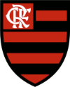
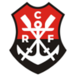
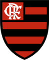
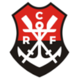

CLUBE DE REGATAS DO FLAMENGO 
Historia
O Clube de Regatas do Flamengo (mais conhecido simplesmente como Flamengo, e popularmente pelos apelidos de Mengo, Mengão e Fla) é uma agremiação poliesportiva brasileira com sede na cidade do Rio de Janeiro, capital do estado de mesmo nome. Fundado no bairro do Flamengo para disputas do esporte remo em 17 de novembro de 1895,tornou-se um dos clubes mais bem-sucedidos e populares do esporte brasileiro, especialmente pelo futebol. Tem como suas cores tradicionais o vermelho e o preto e como seus maiores rivais esportivos o Vasco da Gama, o Fluminense e o Botafogo
A origem
Em fins do século XIX o remo dominava o Rio de Janeiro. O futebol começava apenas a aparecer em alguns clubes, mas ainda era olhado com certo temor, pois não estava sendo recebido com entusiasmo pela sociedade carioca. A criação de um grupo organizado com o objetivo de disputar competições de remo com clubes de outros bairros surgiu entre jovens do bairro do Flamengo, no Café Lamas, no Largo do Machado.
Nestor de Barros, José Agostinho Pereira da Cunha, Felisberto Laport, Augusto Lopes, Mário Spindola e José Félix da Cunha Meneses compraram um barco, chamaram-no de "Pherusa" e o reformaram.
Em 6 de outubro de 1895 os antes citados, juntamente com Maurício Rodrigues Pereira e Joaquim Bahia, saíram da Ponta do Caju, e com o tempo desfavorável, foram rumo à Praia do Flamengo, mas o vento fez o barco virar. Bahia nadou até a praia para conseguir ajuda e chegou algumas horas depois, mas a chuva parou rapidamente e outro barco, o "Leal", resgatou os jovens e o que tinha restado da Pherusa. Então foi iniciada uma nova reforma da embarcação, mas ela foi roubada e desapareceu.
Início do futebol
A partir de 1902 o remo passou a dividir com o futebol a preferência popular. Assim, os associados do Flamengo tornaram-se sócios também do Fluminense para acompanhar o futebol, e os do clube das Laranjeiras vieram para o rubro-negro a fim de acompanhar as regatas. Alberto Borgerth representava bem o exemplo, pois pela manhã remava pelo Flamengo e à tarde jogava pelo seu clube, o Fluminense.
Entretanto, em 1911, houve a cisão no Fluminense e muitos jogadores do tricolor vieram para o Rubro-negro, resolvendo em assembleia do dia 8 de novembro de 1911 fundar um departamento de esportes terrestres, com Alberto Borgerth na direção. A briga entre Oswaldo Gomes e muitos dos jogadores do primeiro quadro do Fluminense foi a razão da discórdia.
Originalmente pensou-se em uma simples adesão ao Botafogo, mas como o alvinegro, na época, era o grande rival do Tricolor Carioca, a ideia foi logo descartada. Em seguida consideraram a ideia de reforçar o já estabelecido Paysandu, mas também foi vetado, uma vez que o clube era composto exclusivamente de ingleses. Finalmente, surgiu a ideia de Borgerth, de se criar uma seção de futebol no Flamengo. A proposta foi aprovada e consagrada na assembleia do clube, realizada no dia 8.
Escudo
O escudo do Flamengo mudou um pouco ao longo da história do clube. A maioria das mudanças foram alterações no monograma de letras entrelaçadas, com o mais recente redesenho sendo revelado em 2018.
O clube usa três escudos em diferentes situações: o escudo completo é usado como logotipo oficial do clube, o escudo de remo é usado para todos os uniformes e equipamentos relacionados ao remo e o monograma "CRF" branco é normalmente o único componente do escudo usado em o uniforme de futebol principal.
A partir de 1980, o Flamengo usava três estrelas brancas alinhadas verticalmente ao longo do lado de sua crista monograma para indicar seus três tri-campeonatos da liga estadual (1942-43-44, 1953-54-55 e 1978-79-79 Especial).[69] Quando a Nike se tornou fornecedora de uniformes do Flamengo em 2000, seu primeiro uniforme apresentava o escudo completo com três estrelas acima pela primeira vez. Após o tetracampeonato estadual (1999-2000-2001) e para comemorar os 20 anos da Copa Libertadores e da Copa Intercontinental de 1981, uma quarta estrela branca e uma estrela dourada foram introduzidas acima do escudo. Desde 2005, o clube usa apenas a estrela dourada acima do escudo do monograma "CRF" em suas camisas.
 

Proxima página


Proxima página